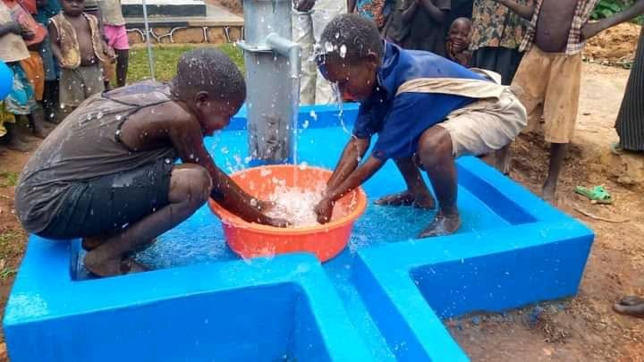
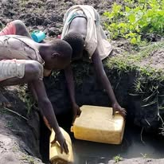
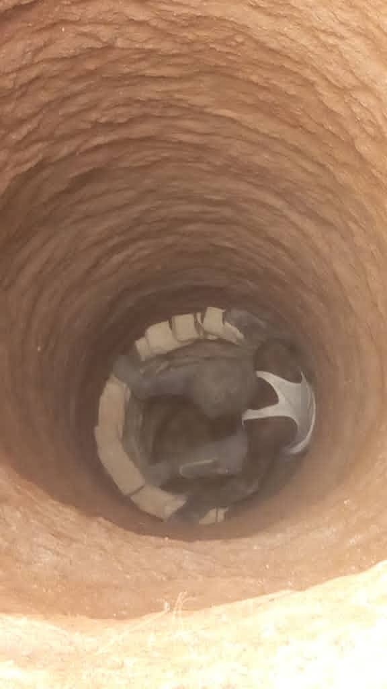
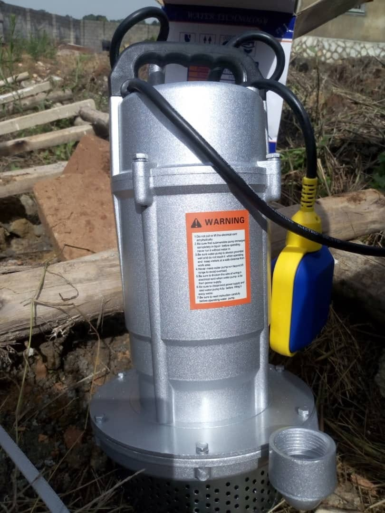
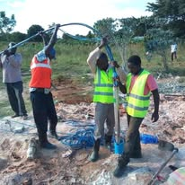
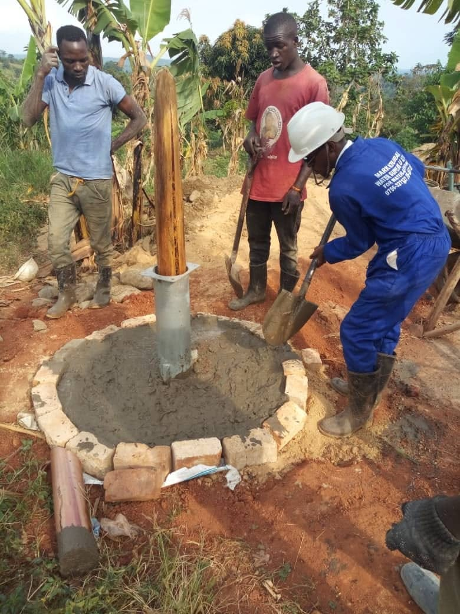

Safe Water Access
Supporting communities through borehole development, improved water access, responsible water practices and community engagement.
Water Matters for Every Community
Access to water is important for children's wellbeing, family health and everyday community life. All God's Children Foundation recognises the importance of improving access to water while encouraging responsible water handling, hygiene and safer practices.
Our Safe Water Access programme highlights community water needs and practical efforts to improve access. We believe communities should participate in identifying their needs and working towards sustainable solutions.


Community Borehole Construction
A reliable water source can make an important difference in daily community life. Our community borehole project involved several stages, from manual digging and drilling to pump installation, construction of the borehole top and community handover.
The photographs below document the stages of the project and the community handover.

The initial digging stage of the borehole project.

Installation of the pump at the community water point.

Drilling work as part of developing the borehole water source.

Construction of the top structure around the water point.

The community handover marking an important stage in the project.
Water Access and Community Participation
Community participation is important in water projects. Working together can help communities identify their water needs and encourage shared responsibility for caring for water points. Appropriate maintenance and water-quality checks are important considerations for a reliable and safe water supply.
Our Areas of Focus
- Community borehole development and water access initiatives.
- Promoting responsible use and care of community water points.
- Raising awareness about safe water handling and storage.
- Encouraging good hygiene practices at home and in the community.
- Helping children understand risks around water sources.
- Promoting community discussion about local water needs.
- Working with potential partners to explore practical water solutions.
Working With Communities
We believe lasting improvements are stronger when communities participate in identifying needs and discussing possible solutions. We seek to work with families, schools, community leaders, organisations and potential partners to improve water access and encourage responsible water practices.
Our Commitment
Our commitment is to support efforts that improve children's and families' wellbeing. Water-related activities depend on community priorities, available resources and suitable partnerships. Developing a water point is one part of the work; proper maintenance and attention to water quality are also important.
Work With Us for Better Water Access
Are you a community group, organisation or potential partner interested in community water access? We welcome you to connect with All God's Children Foundation.
Contact Us Partner With Us